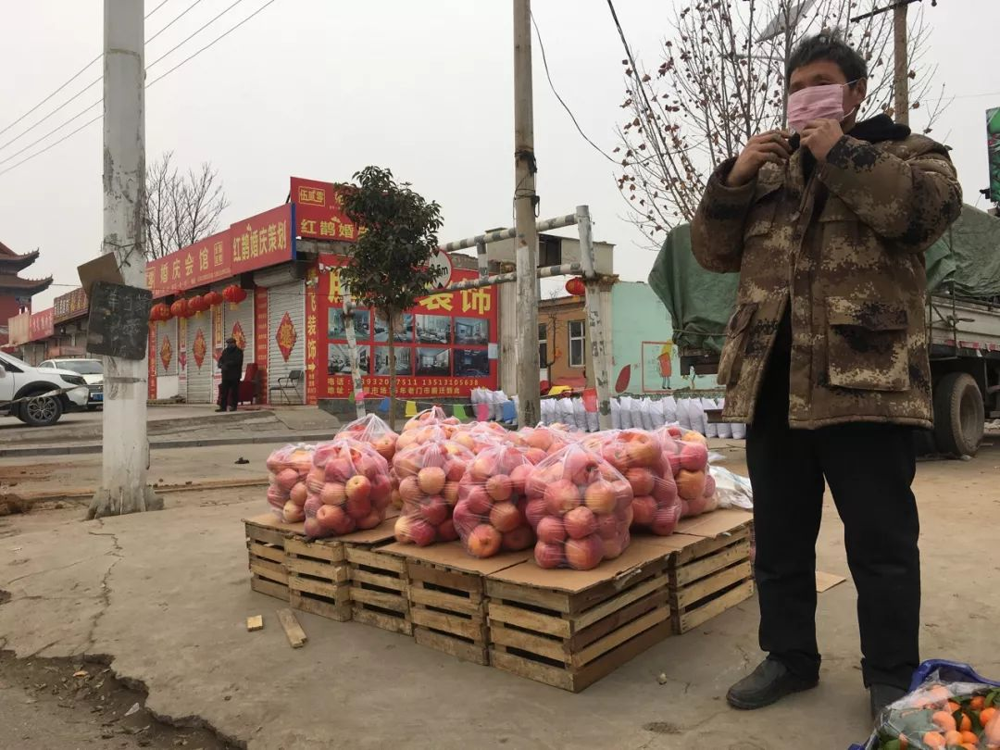
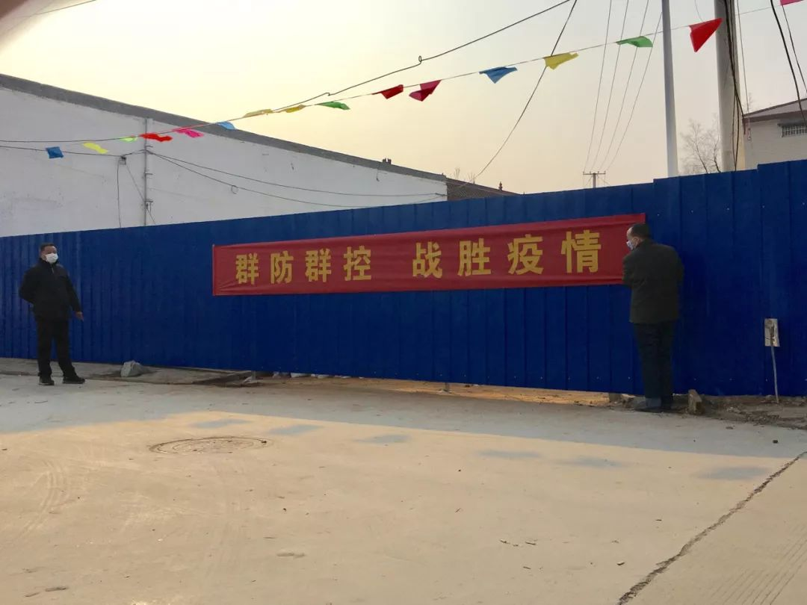
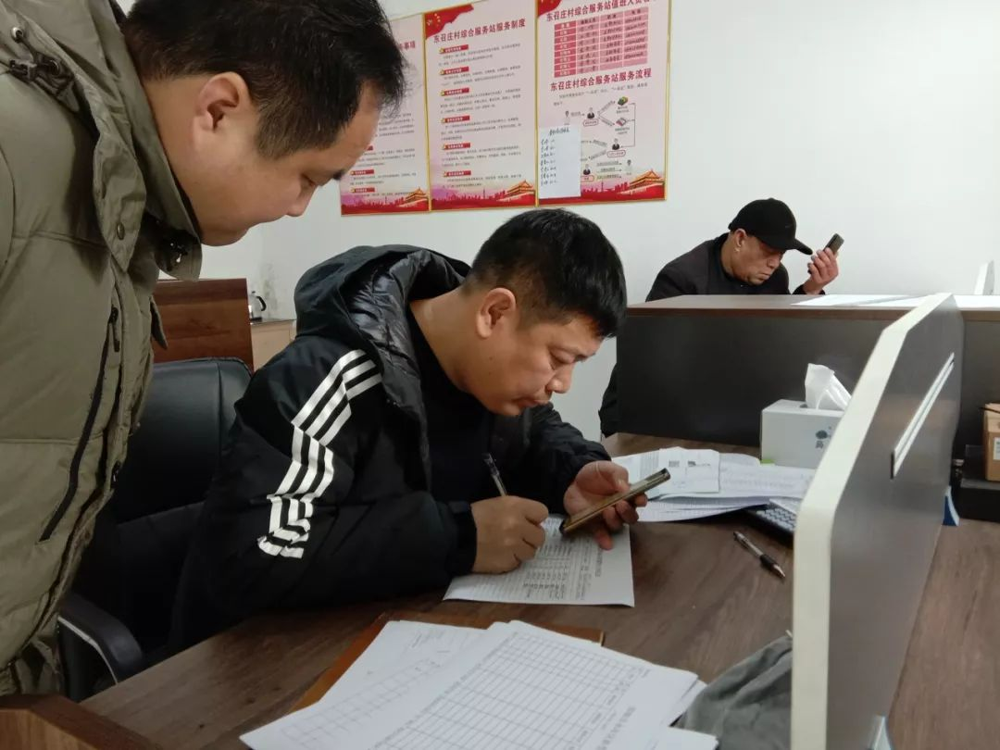

“我想保护好我的村”
原文链接 备份链接 *************▲*************玉龙雪山脚下的玉湖村。 （受访者供图/图） 全文共*4244*字，阅读大约需要10分钟。 在求助信里，我写了四样求支援的物品，是因为我只知道这四样。而实际情况 …
**记者/李东
**
编辑/ 石爱华 宋建华

东召庄村的村口被彩钢板“焊死”
河北邯郸市的一个小村庄东召庄村，像北方大多数农村一样，至今留着诸多春节传统，抬花桌、拜年、祭祖等等。
武汉疫情爆发后，村里的防疫措施不断升级，东召庄村的风俗习惯和日常生活也不断被“挤压”，从禁止拜年祭祖，到黄土堵路，再到彩钢板封村。
村干部李峰从最初的“纠结”变成了现在的“果断”，他很理解那个在村广播里粗犷表达的河南“硬核书记”，“真没别的办法了”，李峰说，在非常时期，村干部就要像个“非常”家长，“不择手段，保护村民”。

封村之前，在村口摆摊的商贩

被无视的村广播
防疫消息像一股浪一样，突然就涌进了村。
东召庄村位于河北省邯郸市永年区，拥有人口4400人。村支书李峰40岁，在村上当书记已超过十年。
1月22日，李峰边吃午饭边看新闻，新冠肺炎感染确诊人数增多的消息不断传来，他推测，镇政府下午召开的紧急会议，多半与疫情有关。
不出所料，会上各村党支部书接到的任务是“引起村民重视”。
李峰当村支书10年，修路、建学校都干过，但组织防疫还是头一回。东召庄村与永年区主城区只有一路之隔，人流量大，在外务工的村民约有1100人，适逢春节返乡，走亲访友的村民数量大，防疫工作从哪做起，李峰一时没有思路。
从镇上开会回来，李峰让广播员进行了第一次广播，从下午4点到晚上8点，东召庄村南北两组大喇叭轮流循环广播最新疫情，并不断叮嘱村民“勤洗手、戴口罩、不要扎堆，尽量别出门”。
22日晚，全国25个省份已经确诊新冠肺炎571例，有的省份已启动了重大突发公共卫生事件一级响应。当天晚上，河北确诊了首例新冠肺炎病例，就在石家庄市，距离东召庄村约150公里。
李峰把这条信息甩进村子微信群里，附了一段语音：“河北已经出现了，请大家务必重视起来，配合村里工作，做好防护。”
“刷到河北确诊病例时，像疫情突然就到了身边似的”，李峰在22日夜里开了村里的疫情防控会，村干部商量，还是要求村民尽量不出门。
但此后两日，循环广播的声音消匿在春节的气氛里，村民像是没听到一样。
村民们照旧收拾房子、倒垃圾、贴春联；村边商店经营如常，村民来来往往采购年货；村内小广场的太阳地上，小孩们扎堆儿游戏，老人坐着闲聊。有子女给长辈送来口罩，老人直接塞进兜里。
为了控制村民出入，村口用黄土堵路
难改变的风俗
1月24日是大年三十，春节晚会里插播了有关武汉抗击疫情的节目，当晚新冠肺炎确诊人数已经达1287例。
晚上10点半，李峰纠结很久，还是来到村委会的广播室，宣布禁止拜年的通知，“万一病毒传进村里，我对不起大家。”
“全体村民注意，由于预防肺炎疫情的需要，社员们明天不要拜年，不要串门，不要外出走动……”广播重复了5次。
东召庄村保留着许多传统的风俗习惯，“抬花桌”就是其中之一。除夕夜里，村里会组织20余名村民吹打着乐器、抬着花桌转遍村子的每个角落，祈祷来年风调雨顺。广播之前，“抬花桌”仪式刚刚结束。
正月初一，街坊们上门拜年也是最重要的传统。在老一辈村民的观念里，不给长辈拜年“不成体统”，年轻人不给彼此父母拜年甚至会被视为“绝交”的信号。
在除夕夜宣布不拜年，村民难理解，不少人人索性聚集到胡同里叽叽喳喳议论起来。
李明入冬时新婚，媳妇是邻村人，按照村里的习俗，新媳妇要在婚后的第一个春节由李明的嫂子们带着，去给家族里的每一位长辈拜年，算是新媳妇认家门。
年轻的邻居认为，非常时期不拜年也是为了大家好，这个时候也不会有人在意这些传统讲究。但李明的父亲坚持必须要拜年，平辈的邻居安慰他：“别上火，拜个年快去快回就妥了，你急个啥？”
李明的父亲向邻居们抱怨，“在村里拜个年，几分钟的事，看你村里怎么禁止？”他打算照旧去拜年，速去速回。
作为村支书，往年来李峰家里拜年的晚辈儿不少，他在大喇叭里宣布今年不拜年后，大年初一，一个上门的也没有。但村里照旧有大量串门拜年的村民，这让李峰和其他村干部无奈。村里的喇叭再次响起，劝拜年的人回家。
一个没戴口罩的中年人经过村部门口时“偶遇”村主任，被劝回家，“你不怕死，别人还要命嘞！”
最终，李明的媳妇只到邻近的长辈家拜了年，远处的亲戚家没去。婆婆通过手机向亲戚们表达歉意，本应亲自给新媳妇的红包，亲戚们通过微信转了账。
村委会成员当晚汇总情况时发现，以往多是成群结队步行去拜年，今年骑着电动车单独“行动”的增多。串门拜年的人来去匆匆，只有个别人没戴口罩，李峰比较安慰，“村民已经开始有防护意识了。”

村口用彩钢板被“焊死”，贴上了防疫横幅
被“焊死”的村口
1月26日，正月初二，在东召庄村的习俗里，是远房亲戚相互拜年的日子。
天蒙蒙亮时，大喇叭里又一次播出了疫情防控的新通知：“请社员们注意，今天不拜年，我们村马上封路，咱们不出去，也禁止外村人进来，请立刻电话、微信通知外村亲戚不要来。”
早6点到7点的一个小时里，一辆拖拉机在村子的8个出入口卸下黄土，将路截开，只在主街道，为应急车辆通行留出必要空间。各村口，村民代表紧急上岗值班，将土装在蛇皮袋子一字排开，挡住7个村口。
22日以后，镇里有关防疫工作的会议一下多起来，有时一天两场，村党支部书记必须参加。村里的会议也频繁起来，“封村”决定在25日晚上的会上被表决通过。
村支书李峰把封村的消息同时发送到了村微信群里，强调“为了全村村民的安全，请大家务必克服一切困难，不要接触外村人”。这次下禁令，他没有犹豫。
这一天，李峰看了河南“硬核村书记”的广播，他能理解河南书记粗犷的表达，“那真的是实在没有办法了”。
多数村民们在微信群里支持封村，但初二上午仍有村民在街上溜达。有村民试图说服把守村口的村民代表，被拒绝后，干脆直接搬开其他出口的土袋子，骑车冲了出去。
这天，永年区启动了重大突发公共卫生事件一级响应。东召庄村通往主城区的路口，出现了警察和医生，凡是进主城区，只能在测体温没异常后才放行。这是许多村民没有经历过的场面，消息传到村微信群里，几十条“求口罩”的信息在群里出现。
1月26日晚8点，李峰和村干部通过大喇叭，又发布了一条“禁令”：“初三禁止出村祭祖”。
王刚听到这个消息时，认为不去祭祖是大忌，他专门到邻居家里商量对策。
以往，祭祖活动都在初三天亮后到中午前进行。王刚与邻居商量好，初三凌晨5点出村去墓地，赶天亮前回村，来回都走小路，跳过土方袋即可顺利出入村子。他们推测，“守村口的村民代表那时候还没起床”。
第二天清早，王刚和邻居去时发现，基本每家都有人去祭祖了。天亮后，各村口的土方袋多多少少都有被搬开的痕迹。
李峰既着急又无奈，“我也知道祭祖是大事，那也不能不要命吧？”在村“两委”干部会上，李峰有点急了。“关系生命安全的事，再重要的习俗也必须让步。”
此后，各村口加装了彩钢板，路口被直接“焊死”，除主街道口外，凡是进人的口均被截断。

李峰在部登记武汉返乡村民情况
隔壁工厂的确诊病例
1月30日，东召庄村的防疫再次升级。
“所有出村村民必须持所在单位证明到村部报备，否则一律不准出村”的消息，以命令的口吻从大喇叭里播发。村部和主街道口陆续出现来询问情况的村民，村委会将红纸黑字的“告知书”贴出来让村民自己看。
在李峰看来，这应该是村部能做出的最严的封村令了。为了更好的下达通知，他召集村里各大家族中有威望的老人来开会，动员他们做好自己家族的工作。“虽然有违习俗，但是为了保命”，这次的传达效果很好，街上的村民少了很多。
让李峰过意不去的，是对武汉返乡人员的排查。从1月22日开始，村里就按照要求对武汉返乡村民进行重点排查。
一位村民订了23日从邯郸飞往武汉的机票，临登机时取消了行程，被村干部排查到。村里一位货车司机在20日经过武汉的高速路，返回村子后，也被村委会询问了情况。
李峰对近期有武汉接触史的村民，排查了至少两遍，有关人员情况如实上报。但镇里多次发来的排查名单，与村里自查的名单出现重复，村干部必须一遍一遍地反复询问排查，“春节期间，一再因这个事打扰他们，难免会让周边人产生偏见。”
东召庄村一共有3人从武汉返乡，赵迁是其中之一，1月14号回老家时，他已经从网上看到了有关新冠肺炎的消息，回来后他没有过多接触外人，自己每天测体温。村委会排查到他时，他已经回村10天，现在3名村医分别负责3个武汉返乡村民的体温测试，每天两次。
1月27日，一份近期从武汉回邯郸人员名单被一村民发到了微信群，赵迁的身份信息也被曝光，那天起，赵迁开始不断接到朋友打来的电话，重复解释着自已的身体情况。“这可好，大年过的，我去见谁都像要害人家似的！”赵迁无奈。
李峰看到群里的消息时，这份名单已无法撤回，他只能在群里一再叮嘱“不要乱传，不要对他们有偏见”。群里这些“叮嘱”消息很快淹没在各种对肺炎疫情的讨论中。
2月5日，与东召庄村紧邻的化肥厂家属院出现一例新冠肺炎的确诊病例，当天，这栋家属楼实行封闭式管理。
东召庄村的防控措施因此再次提升。此前，村民持有单位介绍信可在7日内自由出入村子，现在，单位介绍信的有效期缩短为1天。凡是出入村子的村民必须由村主任签字同意。偶尔有村民出去送饭、买菜，均由村口值守的村民代表代劳。
一些村民开始在群里庆幸东召庄村封村及时，谁也没想到，这场自武汉而来的疫情，真的到了村口。
（为保护采访对象隐私，文中李明、王刚、赵迁均为化名。）
【反侵权公告】本文由北京青年报与腾讯新闻联合出品，未经授权，不得转载。


送别李文亮医生：愿天堂没有病毒| 深度报道

鄂A牌车30小时归乡记 | 深度报道

一个武汉红十字会志愿者的自述 | 深度报道


原文链接 备份链接 *************▲*************玉龙雪山脚下的玉湖村。 （受访者供图/图） 全文共*4244*字，阅读大约需要10分钟。 在求助信里，我写了四样求支援的物品，是因为我只知道这四样。而实际情况 …
原文链接 备份链接 2月3日，武汉市洪山区驿海柏曼酒店，医生袁红在查看一名疑似患者的肺部CT，并告知病患“您目前的感染情况不严重，不要害怕”。该酒店的医生会根据疑似病患此前在医院得到的诊断，对其作大致的病情判断，并提供抗病毒、退烧的口服 …
原文链接 备份链接 29.01.2020本文字数：3082，阅读时长大约6分钟 导读：基层疫情防控的压力主要包括居民防护意识淡薄、基层医护人员不足和防护设备短缺等。 作者 | 第一财经 吴绵强 一场导致湖北多地“封城”的肺炎疫情，影响了 …
原文链接 备份链接 *************▲************* 1月27日，旅客在关闭的青岛汽车总站外徘徊。 （新华社记者 李紫恒/图） 全文共*1705*字，阅读大约需要*4*分钟。 我们村“封”在村里的年轻人每天猫在家 …
原文链接 备份链接 《战疫口述记》，是燃财经在新型冠状病毒肺炎期间推出的特别栏目，记录疫情亲历者的观察和感受。本文为第2期，第1期请见《我在武汉战肺炎》。 作者 | 闫丽娇 唐亚华 孟亚娜 金玙璠 黎明 孔明明 苏琦 编辑 | 周昶帆 春 …